În stînga este slide-ul din curs, în dreapta aceeași figură, calculată în browser din aceleași date. Butonul ▶ modifică parametrul pas cu pas.
Prognoza riscului de mîine · Dinamica dispersiei · Estimare și incertitudine · Prognoze și rezultate pe piețe · Asimetrie și alegerea modelului · Inovații și diagnostic · Prognoza și evaluarea prognozelor · Extensii și limite · Studii de caz: volatilitate bazată pe un cvasi-scor și ciclurile volatilității
Prognoza riscului de mîine
Volatility clustering pe orice piață
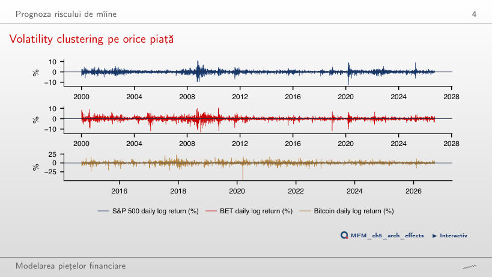
Răspuns
În 62% din cazuri. Pragul este depășit în 105 zile (1,6% din zile); la zile independente, probabilitatea ar fi 8%. Proporția este 54% la BET și 32% la Bitcoin.
Semnul este aproape imprevizibil, mărimea nu
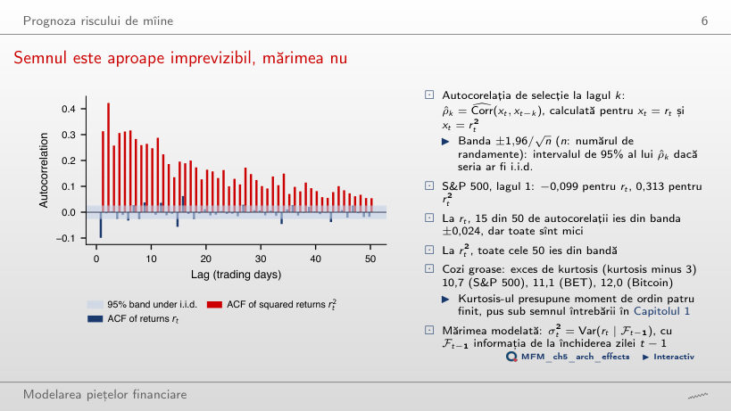
Răspuns
Dependența mărimii randamentelor poate exista fără o dependență liniară puternică a randamentelor. Toate cele 50 de autocorelații ale lui r² ies din banda ±0,024; la r ies 15 din 50, dar toate sînt mici. Autocorelația mică nu implică independență, iar autocorelația pătratelor nu măsoară precizia unei prognoze a semnului. Banda ±0,024 este un reper asimptotic punctual sub ipoteza i.i.d.
Dinamica dispersiei
Simulare: GARCH produce volatility clustering
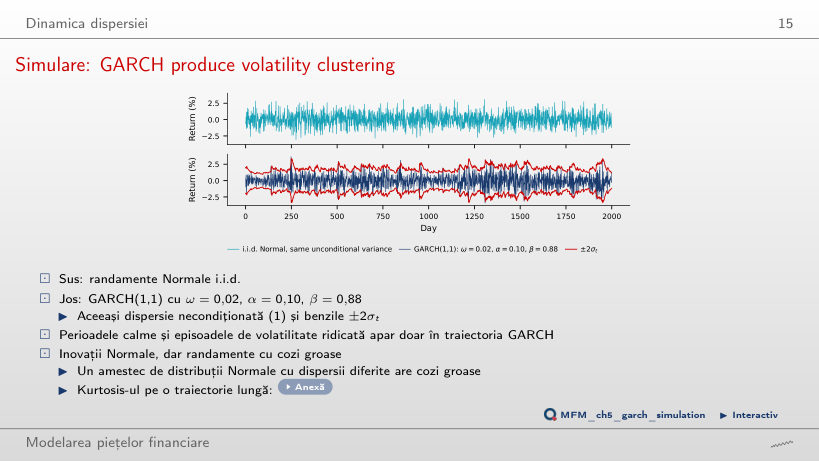
Răspuns
Da, distribuția necondiționată a randamentelor are exces de kurtosis teoretic de aproximativ 3,06. Momentul de ordin patru este finit deoarece 0,98² + 2 × 0,10² = 0,9804 < 1. Distribuția condiționată este Normală; distribuția necondiționată combină dispersii diferite. Excesul estimat este 0,40 pe cele 2 000 de zile din pagină și 2,47 pe traiectoria de un milion de zile din curs: kurtosis se estimează imprecis pe eșantioane scurte.
Estimare și incertitudine
Persistență aproape de 1: limitele metodei delta
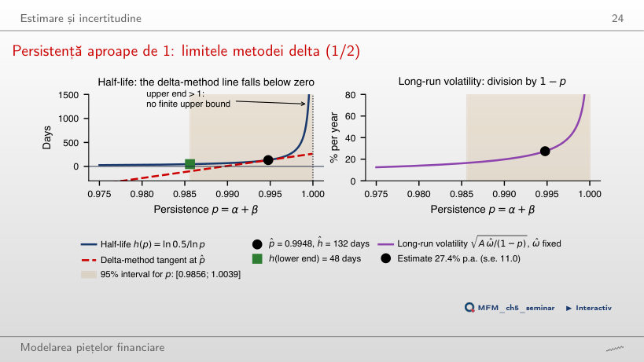
Răspuns
Nu. Eliminarea valorilor negative nu justifică acoperirea intervalului. Problema este curbura lui h(p) lîngă 1: tangenta metodei delta coboară sub zero. Transformarea porțiunii p < 1 din intervalul pentru persistență, [0,9856; 1,0039], dă o limită inferioară de circa 48 de zile și nicio limită superioară finită; valorile p ≥ 1 nu descriu înjumătățirea unui șoc.
Prognoze și rezultate pe piețe
Structura la termen a volatilității
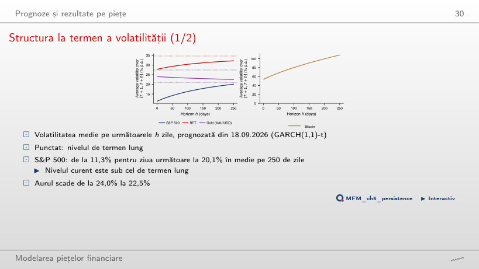
Răspuns
Pagina calculează √(A · H−1 Σj=1H Et[σ2t+j]), unde A este numărul de randamente pe an. Media se face înainte de extragerea rădăcinii. La H = 250 rezultă 20,1%; valoarea nu este nici media volatilităților, nici volatilitatea ultimei zile. Prognoza crește spre nivelul de termen lung, 27,4%, pentru că nivelul curent este sub el. La aur curba scade de la 24,0% la 22,5%; la Bitcoin α̂ + β̂ = 1, iar valoarea la 250 de zile este 108,3%.
Persistența: viteza de disipare a șocurilor
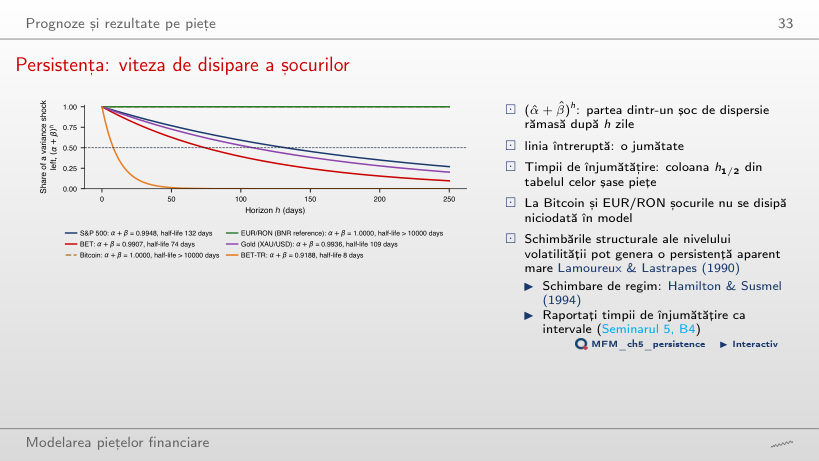
Răspuns
Rămîne neschimbat. Efectul rămas este proporțional cu mărimea șocului inițial, dar fracția rămasă este ph. Timpul de înjumătățire depinde de p, nu de amplitudine: circa 132 de zile la S&P 500 și 8,18 zile la BET-TR. După 100 de zile rămîn 59% din șoc la S&P 500 și practic nimic la BET-TR. La Bitcoin și EUR/RON α̂ + β̂ = 1, deci în model șocurile nu se disipă.
S&P 500: volatilitatea GARCH și VIX
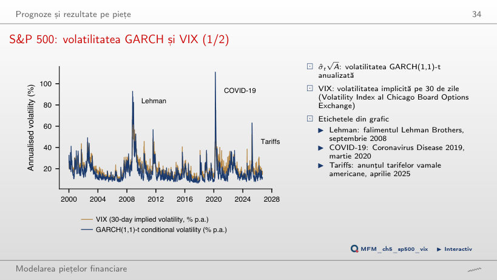
Răspuns
Nu. Prima de risc a dispersiei compară VIX² cu o prognoză a dispersiei pe 30 de zile sub probabilitatea reală, iar σ̂ este o volatilitate pe o zi, filtrată cu parametrii estimați pe tot eșantionul. VIX depășește volatilitatea GARCH în 84% din zile.
Asimetrie și alegerea modelului
Curba de impact a știrilor pentru S&P 500
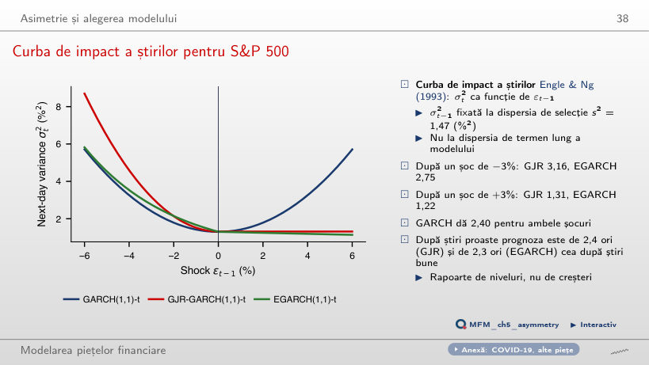
Răspuns
Rămîne aproximativ 1,85 %². Diferența este γ × 3² ≈ 1,846 %². Termenul βσ² anterior crește identic pentru ambele semne și se anulează din diferență. Dublarea nivelului anterior nu dublează asimetria; șocurile în procente rămîn fixe. La σ²(t−1) = 1,47, EGARCH dă 2,75 și 1,22, iar GARCH(1,1) dă 2,40 pentru ambele șocuri.
Inovații și diagnostic
S&P 500: normalitatea inovațiilor
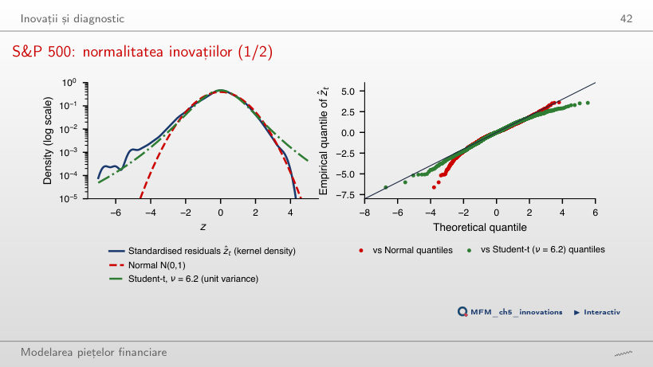
Răspuns
Sliderul schimbă distribuția de referință, nu reziduurile estimate. Cele 16 observații rămîn aceleași. Numărul așteptat sub Student-t scade de la circa 8,6 la circa 0,9 la ν = 30; sub distribuția Normală sînt așteptate 0,21. Excesul de kurtosis scade de la 10,7 (randamente) la 1,73 (reziduuri), dar normalitatea este respinsă clar: Jarque–Bera 1 156.
Prognoza și evaluarea prognozelor
Schema out-of-sample și traiectoriile prognozelor, 2016–2026
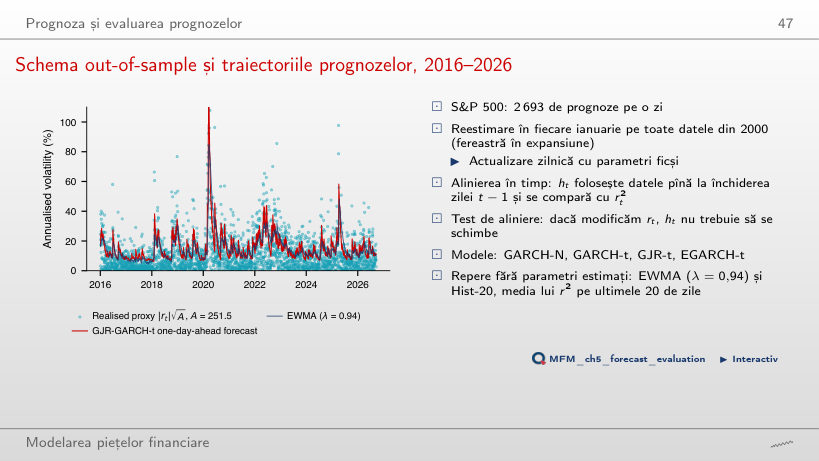
Răspuns
Nu. Prognozele pentru un λ fix folosesc trecutul, dar alegerea retrospectivă a lui λ folosește rezultatele întregii perioade. Minimul pe grilă este circa 0,812, față de 0,814 la λ = 0,94 și 0,731 pentru GJR-t. Evaluarea procedurii de selecție cere o perioadă separată sau selecție rolling. Față de GARCH-t, t DM al EWMA cu λ = 0,94 este 3,47.
S&P 500: evaluarea prognozelor față de GARCH(1,1)
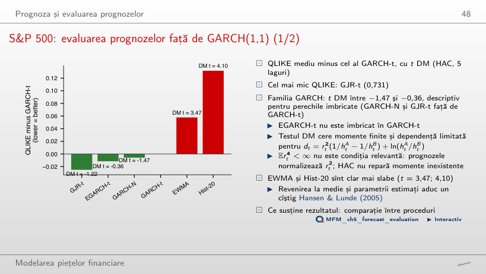
Răspuns
GARCH-t este imbricat în GJR-t, iar schema cu parametri estimați nu justifică automat referința Normală standard pentru DM. Diferența negativă descrie avantajul mediu observat. Nu demonstrează nici superioritate statistică, nici egalitatea acurateței. EWMA (t = 3,47) și Hist-20 (t = 4,10) au pierderi mai mari; cu MSE ordinea se schimbă: EGARCH-t are cea mai mică valoare, 21,30.
Extensii și limite
Memoria lungă: forma ACF a lui |r|
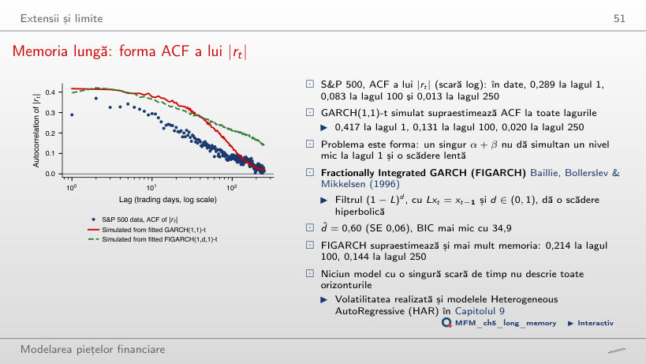
Răspuns
Nu. Persistența ridicată nu este același lucru cu memoria lungă. Pentru această curbă, suma autocorelațiilor este ρ₁/(1 − p), finită. Separat, potrivirea empirică este imperfectă: la ρ₁ = 0,289, minimizarea erorilor pătratice pe 250 de laguri dă p ≈ 0,9875, nu valoarea inițială 0,9948; curba scade prea repede la început (0,258 față de 0,295 la lagul 10) și prea încet apoi (0,156 față de 0,132 la lagul 50). Datele au 0,289 la lagul 1, 0,083 la lagul 100 și 0,013 la lagul 250.
Studii de caz: volatilitate bazată pe un cvasi-scor și ciclurile volatilității
QSD: replicare pe 11 acțiuni (cf. lucrarea, Fig. 2)
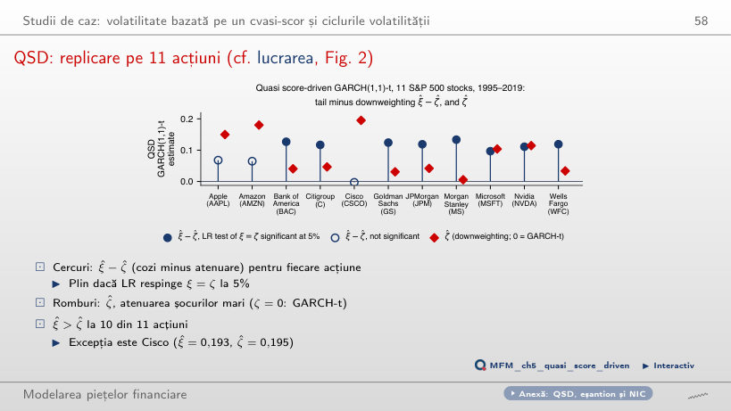
Răspuns
Scade. Contribuția, exprimată în unități de αft, scade de la aproximativ 6,46 la 4,11. Pentru acest șoc mare, creșterea lui ζ întărește atenuarea. Parametrul ξ al densității rămîne separat de ζ în QSD. Pe cele 11 acțiuni, ξ̂ > ζ̂ la 10 (excepția este Cisco); testul LR respinge ξ = ζ la 5% pentru 8 acțiuni și ζ = 0 (actualizarea GARCH-t) pentru 9.
S&P 500: componenta lentă a volatilității și prognozele pe luni
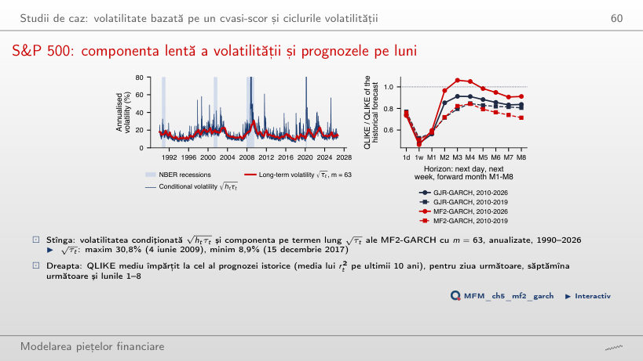
Răspuns
Nu. În aproximația asimptotică folosită în curs, pragul unilateral este 1,645. Statistica 0,99 nu îl depășește. GJR are pierdere medie mai mică în acest eșantion, fără dovadă de superioritate la 5%; aceasta nu demonstrează egalitatea. Pe 2010–2019 ordinea era inversă: 0,714 pentru MF2-GARCH și 0,806 pentru GJR-GARCH (t DM −2,66).
Randamente logaritmice zilnice în %, închideri pînă la 18 septembrie 2026: S&P 500, BET, BET-TR, Bitcoin, aur (XAU/USD) și VIX, prețuri EODHD; EUR/RON: cursul de referință BNR. Studiile de caz: 11 acțiuni din S&P 500, 1995–2019, și S&P 500, 1990–2026, prețuri EODHD.